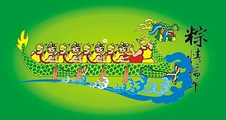
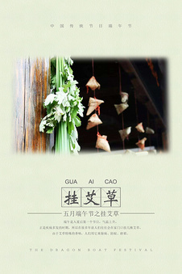

节日简介
端午节，为每年农历五月初五。据《荆楚岁时记》记载，因仲夏登高，顺阳在上，五月是仲夏，它的第一个午日正是登高顺阳好天气之日，故五月初五亦称为“端阳节”
为什么吃粽子？
古时为祭祀投江的屈原，荆楚之人农历五月五日会煮糯米饭或蒸粽糕投入江中，为恐鱼吃掉，人们想出用粽叶包米，外缠彩丝。后来，吃粽子就成了端午节的风俗。在老北京，粽子用江米、黄米、小枣做成，俗称“二米粽子”。系粽子则用马莲草，也是北京特产。

为什么划龙舟？
传说楚国人借划龙舟驱散江中之鱼，以免鱼吃掉屈原的身体。王作楫说，古人赛龙舟时在终点设了鱼标、鸭标、铁标，谁拿到这3个标就获得了冠亚季军。为了让参赛者从远处看到终点，古人还会在3个标上用锦缎打上蝴蝶结。

为什么挂艾草？
端午节当天，人们会在院门前和房檐下挂艾草或菖蒲，因为二者皆为中草药，蚊虫害怕这种味道，能起到驱蚊的效果。 因为习蒲的叶子形状似剑，古人称之为“水剑”，说它可“斩千邪”。人们便会把菖蒲刻成“小人儿”、“小葫芦”等形状，挂在儿童脖子上，以求吉利。也会挂在门楣，起到驱魔祛鬼的效果。